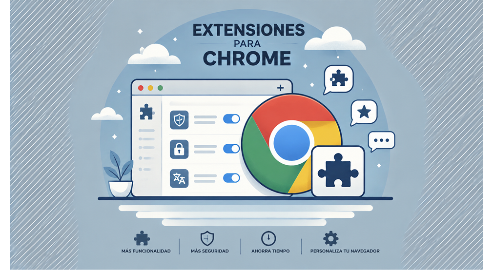
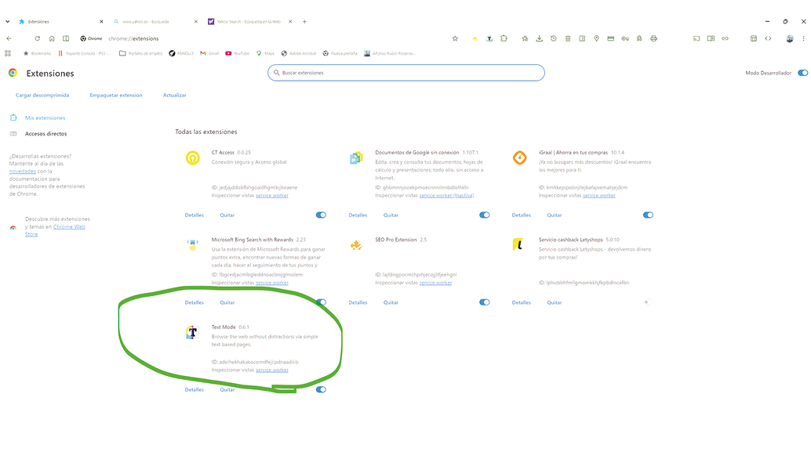
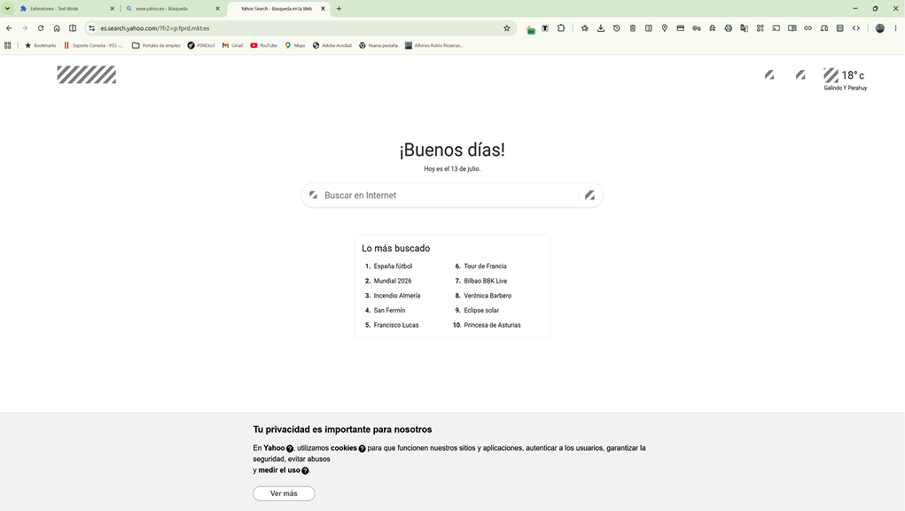
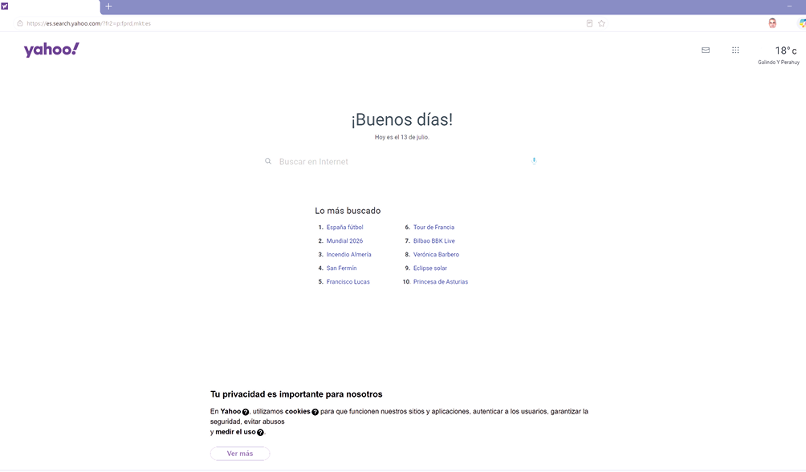
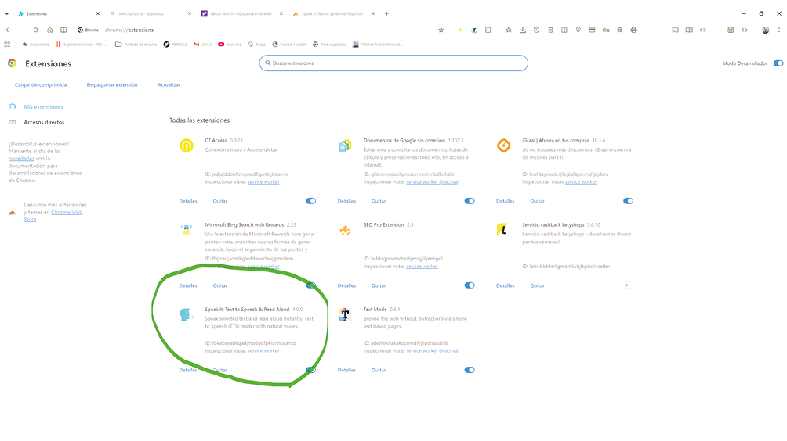

COMPLEMENTOS EN CHROME
Unidad Didáctica 4. Pruebas y verificación de páginas web
Publicación de páginas web (MF0952_2)
Módulo formativo:
Actividad 2 Caso teorico práctico.
Alumno: Alfonso Rubio Rioseras
Fecha: Julio 2026
PREGUNTAS/ACTIVIDADES A REALIZAR
Pregunta 1. Instalación y uso de complementos en Chrome.
a. Instale la extensión “Text Mode” (o una extensión similar actual que permita ver páginas web en modo solo texto).

b. Acceda a la página web www.yahoo.es y visualícela de forma normal y luego activando la extensión para verla en modo solo.
texto. Describe las diferencias que observas.

La diferencia es que en el modo texto se omite cualquier tipo de imagen o elemento grafico.
c. Instale la extensión “SpeakIt” (o alguna extensión actual de lectura en voz alta compatible con Chrome).
d. Configure la extensión para que use una voz en español (preferiblemente masculina).
e. Acceda a una página de noticias como www.microsoft.com/es-es o www.apple.com/es/, selecciona un texto y haz que sea
leído en voz alta por la extensión.


Pregunta 2. Herramientas y entornos de prueba para verificación de páginas web
a. ¿Qué herramientas o entornos de prueba se pueden utilizar para verificar que se cumplen las especificaciones recibidas y que la página se visualiza correctamente en distintos navegadores y dispositivos?.
Para verificar que una página web cumple las especificaciones recibidas y se visualiza correctamente en distintos navegadores y dispositivos, es recomendable utilizar una combinación de herramientas de desarrollo, validación y pruebas.
En primer lugar, los navegadores modernos como Google Chrome, Microsoft Edge, Mozilla Firefox y Safari incorporan herramientas para desarrolladores (DevTools) que permiten inspeccionar el código HTML y CSS, detectar errores, analizar el rendimiento y simular diferentes resoluciones de pantalla y dispositivos móviles.
También es aconsejable utilizar plataformas especializadas de pruebas multidispositivo como BrowserStack, LambdaTest o Sauce Labs, que permiten comprobar el funcionamiento de la página en distintos sistemas operativos, navegadores y versiones sin necesidad de disponer físicamente de todos los equipos. Estas herramientas ayudan a detectar problemas de compatibilidad y de diseño responsive antes de publicar el sitio web.
Además, es conveniente validar el código utilizando herramientas del World Wide Web Consortium (W3C), como el validador de HTML y CSS, que detectan errores de sintaxis y ayudan a garantizar que la página cumple los estándares web. También pueden emplearse herramientas como Google Lighthouse para evaluar aspectos como el rendimiento, la accesibilidad, las buenas prácticas y el posicionamiento SEO.
Finalmente, es recomendable realizar pruebas en dispositivos reales (ordenadores, tabletas y teléfonos móviles con diferentes sistemas operativos) para comprobar la experiencia del usuario, la correcta adaptación del diseño, la velocidad de carga y el funcionamiento de formularios, enlaces y elementos interactivos. La combinación de todas estas herramientas proporciona una verificación completa de la calidad y compatibilidad de la página web antes de su publicación.